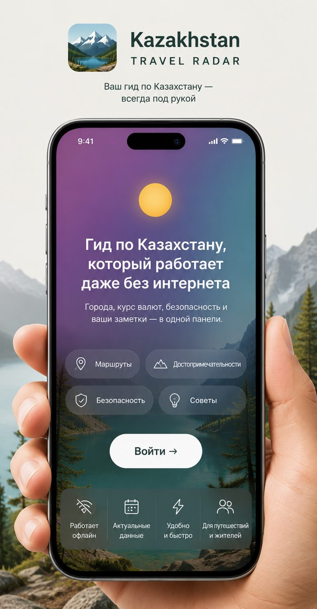

KZ Travel Radar
Города, курс валют, экстренные номера и разговорник — вместо десятка открытых вкладок и групп в чатах.
Получить доступ →
Один сайт — про города, другой — про курс валют, третий — форум с советами трёхлетней давности.
Такси, кофе, обед — цены на глаз, легко переплатить, не зная ориентиров.
Простое «спасибо» или «сколько стоит» — а искать в интернете каждый раз неудобно.
В горах или в дороге связь пропадает — а важные номера и заметки нужны именно тогда.
Города Казахстана, курс валют, безопасность и мини-разговорник — в одной панели на телефоне. Работает даже без интернета.
Открыть путеводитель →Алматы разобран подробно: куда сходить в первые 48 часов, что смотреть, куда ехать на день. Без воды, только по делу.
Конвертер валют и ориентировочные цены на всё привычное — такси, кофе, обед, связь.
Экстренные номера и что делать, если что-то пошло не так — без поиска в панике в последний момент.